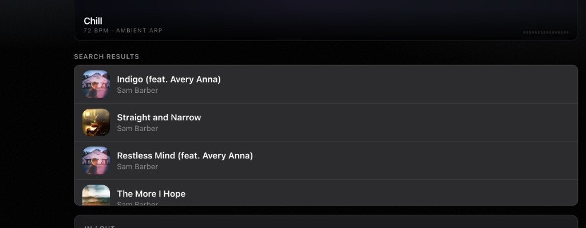
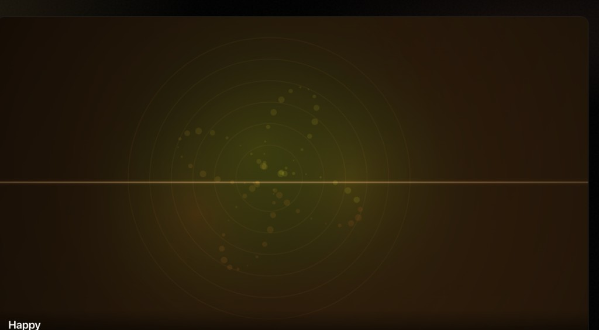
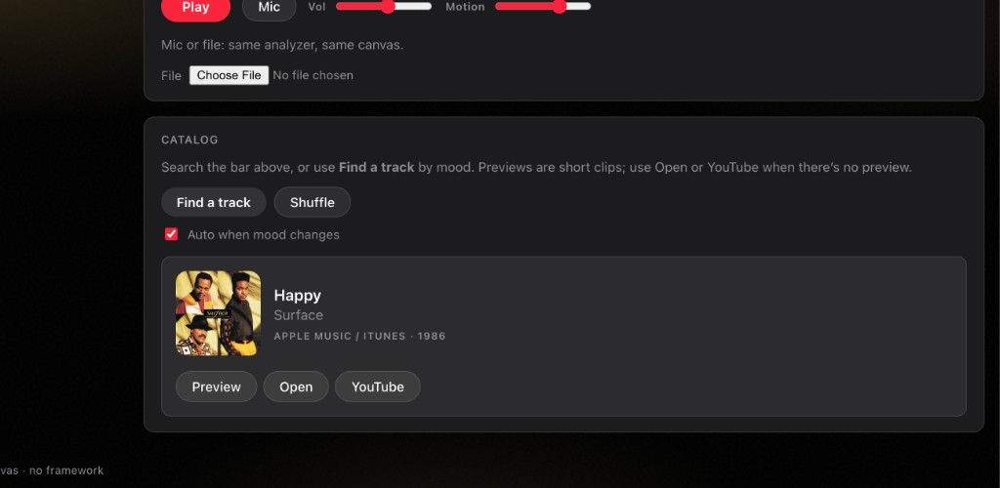

Resonance: Browser-native audio + reactive visuals
Resonance is a single-page web app that generates mood-driven music, analyzes live audio signals, and renders animated visual feedback in real time. This page summarizes the project's most important product and engineering capabilities.
Key Features
- Mood-driven synthesis: each mood uses its own tempo, note behavior, timbre, and filter profile.
- Audio-reactive canvas: FFT and waveform data drive mirrored spectrum bars, particles, rings, and meter activity.
- Multiple audio modes: generated soundtrack, microphone input, and local file playback all feed the same analysis pipeline.
- Integrated discovery: users can fetch and preview tracks that match the selected mood.
Screenshots
Real captures from the original Resonance interface showing search, visualization, and catalog controls.



Technical Architecture
Audio Graph
- Built around
AudioContextwith separate synth and master stages. BiquadFilterNodeapplies mood EQ characteristics.DynamicsCompressorNodecontrols dynamic range before analysis/output.AnalyserNodeprovides frequency and time-domain data for rendering.
Rendering Loop
requestAnimationFramepowers smooth continuous updates.- Energy bands (bass, mid, treble) modulate movement and color behavior.
- Mood color states transition gradually for visual continuity.
- Responsive canvas scales to different viewport sizes.
Reliability and Fallback Strategy
The recommendation pipeline is intentionally defensive so the experience remains useful even when providers block requests or CORS constraints appear.
- Primary iTunes query via standard/proxy fetch flow.
- iTunes JSONP fallback for restrictive network contexts.
- Deezer query fallback for additional catalog coverage.
- Openverse fallback for browser-friendly fetch behavior.
- Offline curated picks + YouTube links as final graceful degradation.
User Experience Highlights
- One-click mood switching with immediate sonic and visual feedback.
- Transport and volume controls for generated or external audio.
- Mic and file support to make visuals react to user-provided input.
- Search, preview, and shuffle track suggestions inside the same flow.
Why this matters
Resonance demonstrates that a single static web page can deliver a rich interactive media experience by combining Web Audio primitives, canvas rendering, and robust API handling, all without framework or build complexity.